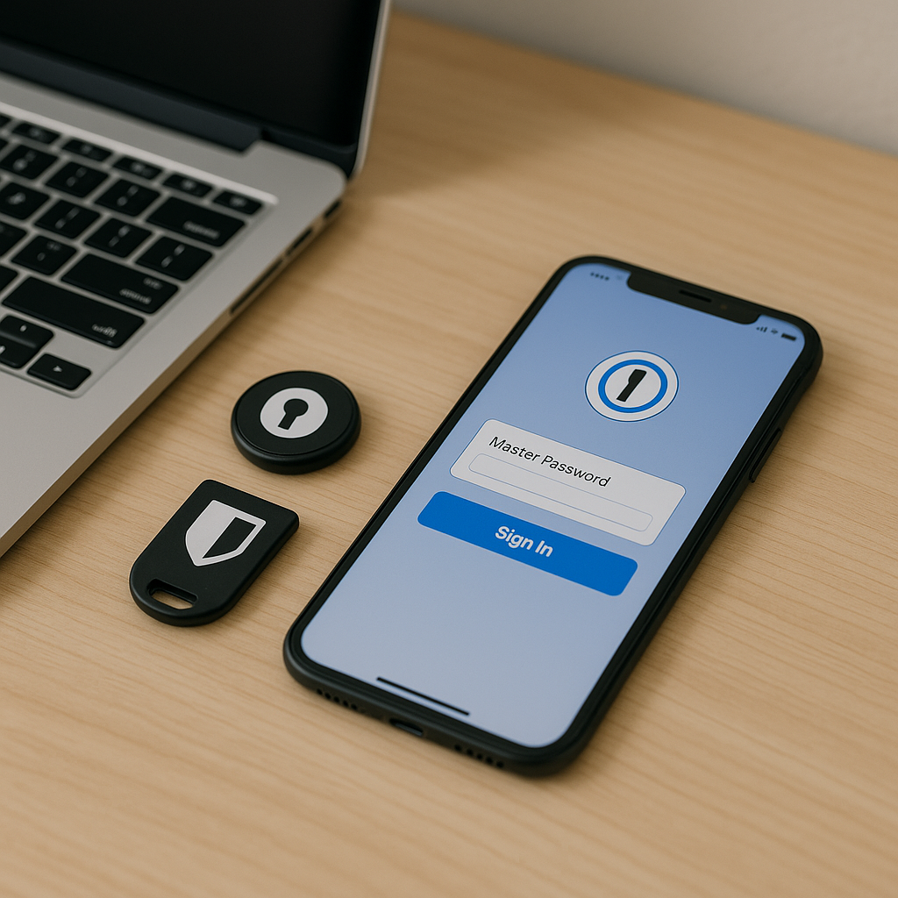
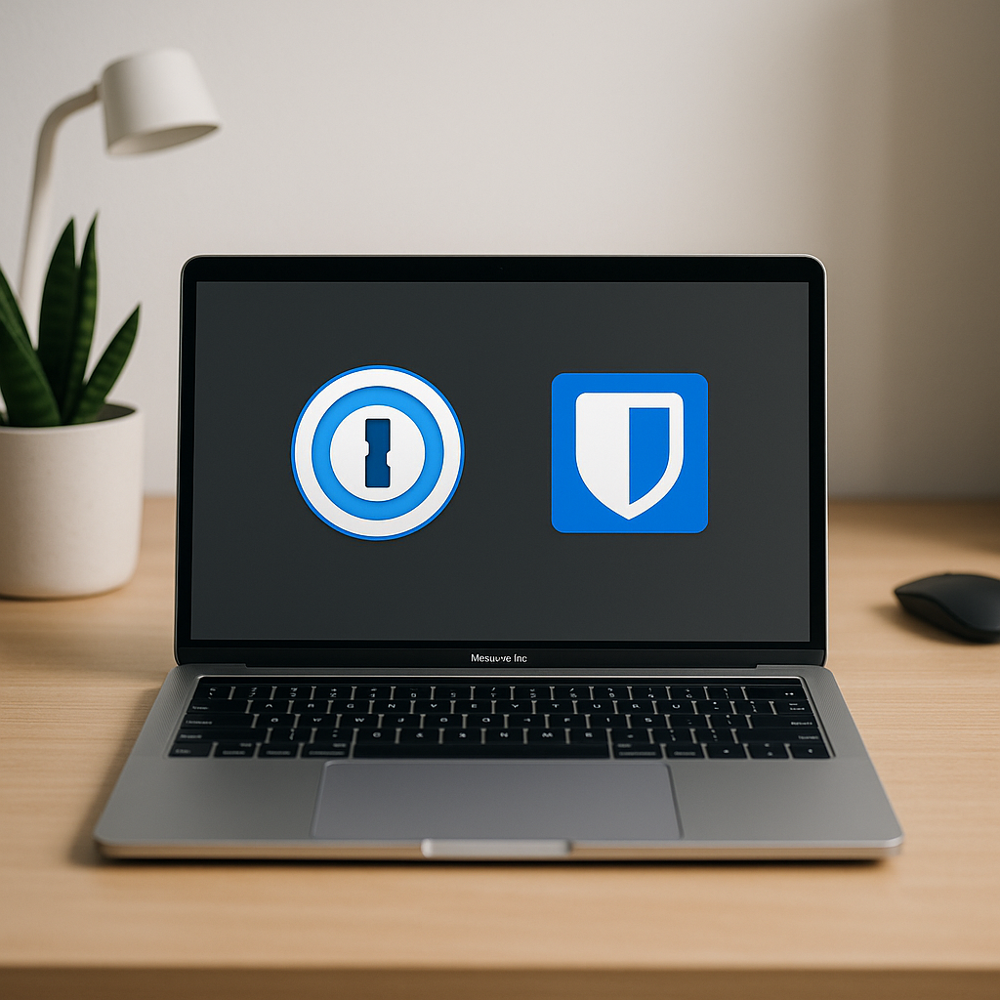

Introduction
As remote work becomes increasingly prevalent, managing passwords securely is more critical than ever. With numerous options available, choosing a reliable password manager can be daunting. Two leading contenders are 1Password and Bitwarden. In this article, we will compare both platforms, highlighting their features, pricing, and usability to help you make an informed decision.
Key Features
Let's dive into the primary features that both 1Password and Bitwarden offer:
- 1Password:
- End-to-end encryption to protect your data.
- User-friendly interface suitable for beginners and advanced users.
- Secure password sharing and collaborative features for team members.
- Watchtower feature to notify users of potential security breaches.
- Bitwarden:
- Open-source platform, enhancing security through transparency.
- Cross-platform compatibility, perfect for diverse working environments.
- Self-hosting option for advanced users wanting complete control.
- Robust password generator to create strong, unique passwords.
Pricing Comparison
Cost is an important factor for remote workers, especially freelancers and startups. Here's how the pricing stacks up:
- 1Password:
- Individual plan: $2.99/month billed annually.
- Family plan: $4.99/month for up to 5 members.
- Business plan: $7.99/user/month, featuring advanced security and support options.
- Bitwarden:
- Free tier available with essential features.
- Premium plan: $10/year, offering additional features like 2FA options.
- Business plan: Starting at $3/user/month, making it budget-friendly for teams.

Usability
Both platforms prioritize user experience, but their approaches differ:
- 1Password:
- Intuitive design with easy navigation.
- Browser extensions simplify access to stored passwords.
- Support for multiple vaults allows organization by categories.
- Bitwarden:
- Clean interface, though some users may find the layout less polished.
- Browser plugins available for seamless integration.
- Customizable options for advanced users.
Security Features
When managing sensitive data, security features are paramount. Here’s how they compare:
- 1Password:
- Offers travel mode to secure data when crossing borders.
- Two-factor authentication (2FA) widely supported.
- Regular security audits and updates ensure reliability.
- Bitwarden:
- End-to-end encryption ensures only you have access to your data.
- Two-step login for added security.
- Source code available for independent security audits.

Customer Support
Good customer support can make or break your experience. Here’s how the two services stack up:
- 1Password:
- 24/7 email support and detailed user guides available.
- Community forums for troubleshooting and advice.
- Bitwarden:
- Email support available but may have slower response times on the free tier.
- Active community forums for user-driven support.
Final Thoughts
Ultimately, the choice between 1Password and Bitwarden will depend on your individual needs and preferences:
- If you prioritize user experience, advanced features, and are willing to pay a premium, 1Password is a solid choice.
- If you're looking for an affordable, open-source, and highly customizable solution, Bitwarden is the way to go.
Consider your work environment, budget, and feature requirements when making your decision, and remember that a reliable password manager is an investment in your digital security and productivity.